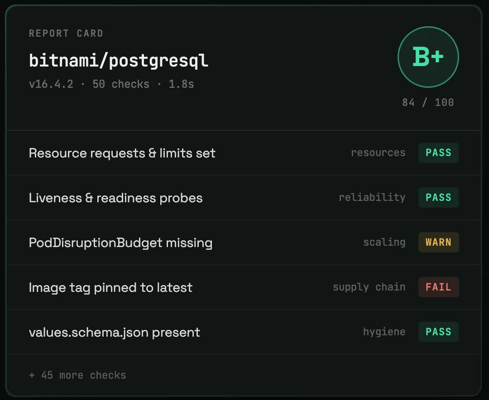

Self-serve by default
Ship a values schema and an install button, not a template and a wiki page.
I build the multi-cloud platform other engineers deploy on — four clouds, one self-serve path.
Two years collapsing cloud setup into a 30-minute, self-serve path: pick a cloud, click install, it is running.
I build multi-cloud infrastructure and self-serve developer platforms in Go, Terraform/OpenTofu, and Kubernetes — the OpenTofu modules and Helm chart catalog behind zop.dev's self-serve provisioning on AWS, GCP, Azure, and OCI, all four at feature parity.
The throughline: if a user has to hand-write YAML or read a template, the platform is not finished. Same instinct behind Helm Doctor, which grades any chart's production-readiness A–F on a deterministic rule engine.
Ship a values schema and an install button, not a template and a wiki page.
A cloud is supported when every module behaves exactly as it does on the other three.
Rules that grade identically every run beat heuristics that are usually right.
Apr 2026 → present
Ship provisioning and deployment features for a self-serve cloud platform — users set up compute, managed Kubernetes, and databases, connect a GitHub repository, and reach production in under 30 minutes from the UI. Collaborate with the platform team on cloud cost-optimization: scheduling idle non-production resources to power down, right-sizing recommendations from utilization data, and reclaiming orphaned resources. Also manage a multi-tenant managed hosting offering where a GitHub URL or container image becomes a live, TLS-secured endpoint in ~5 minutes.
Jul 2025 → Mar 2026 · 9m
Delivered OCI end-to-end — networking, Kubernetes, and managed databases — at full feature parity with AWS, GCP, and Azure, and owned the OpenTofu modules and Helm charts behind self-serve provisioning. Built a standalone Go microservice that auto-tags cloud resources using ONNX models trained on resource metadata, with a human-in-the-loop feedback cycle driving continuous retraining. Provided DevOps support for a multi-tenant e-commerce platform on GCP, cutting cloud spend by ~₹80K/month.
Jul 2024 → Jun 2025 · 1y
Built the reusable Terraform/OpenTofu modules that let zop.dev users stand up an entire cloud account in ~30 minutes — networking, compute, databases, and services — replacing module-by-module manual setup. Authored and maintained 20+ production Helm charts, each with a values schema for single-click install.
Oct 2023 → Mar 2024 · 6m
Architected the Terraform infrastructure-as-code baseline for a fintech client across AWS and GKE, bringing dev, staging, and production live in ~1 hour, with CircleCI pipelines running automated checks on every deployment. Shipped a production AI chatbot on Vertex AI and Bedrock.
Mar 2023 → Sep 2023 · 7m
Trained GAN models for facial prediction, improving image fidelity through iterative architecture tuning and systematic data preprocessing. Automated the training and code-execution workflows with shell scripting, cutting a full fine-tuning run to ~1 hour and making experiments reproducible across the research team.
Two years of commits, squashed into numbers.
Built shipping multi-cloud provisioning and production Helm charts that other engineers deploy on every day.
1stack:2 languages: [go, python, bash, sql]3 iac: [terraform, opentofu]4 orchestration: [kubernetes, docker, helm]5 cloud: [aws, gcp, azure, oci]6 delivery: [github-actions, circleci]7 backend: [gofr, rest-apis, microservices, redis]8 observability: [grafana, prometheus, mimir, loki]9 ai-ml: [vertex-ai, bedrock, onnx]10 tooling: [linux, git, github]1112mode: ship_the_platform # self-serve • four clouds • zero hand-written YAML
Terraform, OpenTofu, AWS, GCP, Azure, OCI
Kubernetes, Helm, Docker, GitHub Actions, CircleCI
Go, GoFr, Redis, Grafana, Prometheus, Loki, Mimir
Grades any Helm chart A–F for production-readiness across Security, Reliability, and Upgradeability — then writes the exact YAML fix for every finding. Charts are fully rendered, exactly as Kubernetes would deploy them, then checked against 50 deterministic rules.
